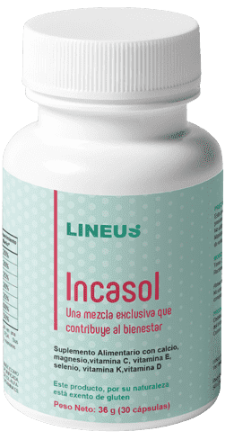

Top news
Un herborista ha creado una receta para la hipertensión por la
que las farmacéuticas están dispuestas a pagar 1.000.000 de dólares
Javier Coronado ha dedicado su vida a estudiar las
hierbas como medicamentos. Consiguió crear una receta que demostró ser 100% efectiva para la
hipertensión y absolutamente segura para la salud. El descubrimiento es tan único que las empresas
farmacéuticas se interesaron por él. Detalles en nuestro material.
Este singular hombre de 70 años, que vive en la selva, lleva más de 35 años estudiando
las propiedades medicinales de la fauna local. Y hay que señalar que con mucho éxito. Hay leyendas
justificadas sobre sus extractos y concentrados de hierbas. Durante su vida ha ayudado a miles de
personas con diversas dolencias, basándose en la medicina popular y en sus propios experimentos con
hierbas, raíces, hojas y plantas.
La fama de sus conocimientos y habilidades se extendió más allá de Santiago. A él
acuden personas de todo el mundo. Las personas decepcionadas con la medicina tradicional y las que creen
en el poder de las hierbas. Ayuda con problemas de estómago, problemas de corazón, problemas de la
mujer, problemas de las articulaciones, problemas de próstata y problemas de pérdida de peso. Pero su
mayor demanda es la de hierbas y concentrados para hipertensos, y para personas con problemas de
presión.
¿Por qué es peligrosa la hipertensión arterial?
Cuanto más alta sea la presión arterial, mayor será el riesgo de dañar el corazón o
los vasos sanguíneos de los órganos principales, como el cerebro o los riñones. La hipertensión es la
causa prevenible más importante de enfermedades cardíacas y accidentes cerebrovasculares en todo el
mundo.
La hipertensión no controlada puede provocar un infarto de miocardio, un agrandamiento
del corazón y, finalmente, una insuficiencia cardíaca.
Los vasos sanguíneos pueden desarrollar dilataciones (aneurismas) y vulnerabilidades
en las que los vasos que son más propensos a obstruirse y romperse. La presión en los vasos sanguíneos
puede provocar una hemorragia cerebral y un accidente cerebrovascular.
La hipertensión también puede provocar insuficiencia renal, ceguera y deterioro
cognitivo.
Las consecuencias para la salud de la hipertensión pueden verse agravadas por otros
factores que aumentan la probabilidad de sufrir un ataque al corazón, un accidente cerebrovascular o una
insuficiencia renal. Entre estos factores se encuentran el consumo de tabaco, una dieta poco saludable,
el uso nocivo del alcohol, la inactividad física y el estrés sostenido, así como la obesidad, el
colesterol alto y la diabetes.
Colaboración de la medicina popular y tradicional.
La fama de las habilidades de Javier Coronado ha llegado también a los círculos
médicos. Muchos científicos y médicos se interesaron por los conocimientos del curandero. Se interesaron
especialmente por las hierbas eficaces contra la hipertensión. Porque este problema en los tiempos
actuales comenzó a preocupar no sólo a las personas mayores, sino también a los jóvenes.
La comunidad científica se dirigió a Javier, pidiéndole consejo sobre las hierbas. El
herborista estaba encantado de compartir sus conocimientos, porque entendía que beneficiaría a la gente
(ayudar a la gente era su prioridad).
Basándose en su experiencia, los científicos del laboratorio estudiaron el efecto de
diferentes combinaciones de hierbas sobre la presión arterial. Y los resultados fueron
sorprendentes.
Una combinación única de varias plantas, esencias, extractos permitió crear un remedio
SIN PRECEDENTES, NATURAL y absolutamente SEGURO para la hipertensión .
Conoce a .

Este innovador remedio natural ayuda en las etapas 1, 2 y 3 de la
hipertensión. Normaliza la presión arterial durante las primeras 6 horas después del ingreso debido a
los BIOFLAVONOS. ¡Restaura el tono y la elasticidad de los vasos sanguíneos en una sola sesión!*
*Basado en ensayos clínicos con 2.674 voluntarios.
también ayuda con:
Sobrecarga del sistema nervioso (estrés, insomnio, etc.)
Alivia la ansiedad
Toxinas en los vasos sanguíneos.
Limpia los vasos sanguíneos de toxinas, mejora la actividad cardíaca
Venas varicosas y trombosis.
Mejora la circulación sanguínea, destruye los coágulos y refuerza las paredes de los vasos
sanguíneos
Niveles elevados de azúcar en sangre.
Reduce los niveles de azúcar, previene la diabetes
Sobrepeso.
Estimula la pérdida de peso, normaliza el metabolismo y la función renal
es el resultado de pruebas de laboratorio clínico y de
conocimientos populares. Contiene sólo ingredientes NATURALES y es completamente SEGURO para todas las
edades.
¡Atención! Para evitar fraudes y falsificaciones, le recomendamos
que haga sus pedidos únicamente a través de La página web oficial de los
representantes de en nuestro país.


Fernando
¡Ya había leído sobre este herborista! ¡Qué bien que compartiera sus conocimientos con los científicos y que éstos hicieran esta cura! Gracias.